Network Topology
Visual overview of the lab network, assets, and traffic flow

Asset Inventory
All hosts deployed in the lab environment
| Asset | Hostname / IP | OS | Role |
|---|---|---|---|
| Domain Controller | DC1.lab.local / 192.168.25.137 |
Windows Server 2022 | AD DS DNS MDI Sensor |
| Workstation | Workstation1.lab.local / 192.168.25.141 |
Windows 11 | Domain-joined endpoint |
| Web Server | web01 / 192.168.25.142 |
Ubuntu 24 | DVWA (Damn Vulnerable Web App) |
| Security Onion | 192.168.25.10 |
Security Onion | Suricata IDS Zeek |
| Attacker | Kali / 192.168.25.130 |
Kali Linux | Red team / attack simulation |
Telemetry & Tooling
Detection layers deployed across the lab to capture endpoint, identity, and network telemetry
Microsoft Sentinel
Cloud SIEM ingesting all log sources. Acts as the single pane of glass for detection, investigation, and hunting across every telemetry layer in the lab.
Microsoft Defender for Endpoint (MDE)
EDR deployed on all Windows and Linux endpoints. Provides deep visibility into process, network, file, and logon activity.
Microsoft Defender for Identity (MDI)
Monitors Active Directory authentication traffic on DC1. Detects lateral movement, credential theft, and reconnaissance against the domain.
Sysmon
Deployed on Windows (DC1, Workstation1) and Linux (web01) using Olaf Hartong's sysmon-modular config for high-fidelity process and network telemetry.
Security Onion
Network monitoring via a dedicated sensor NIC on a network tap. Passively captures and analyses all mirrored traffic from the lab network.
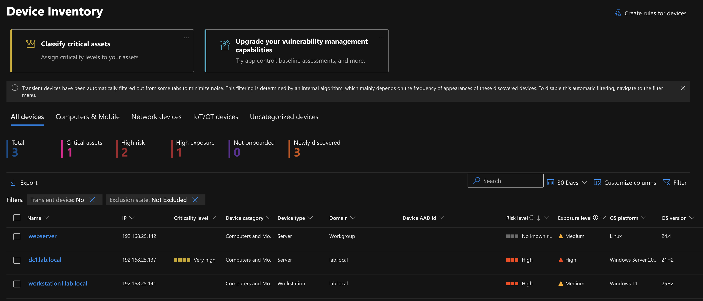
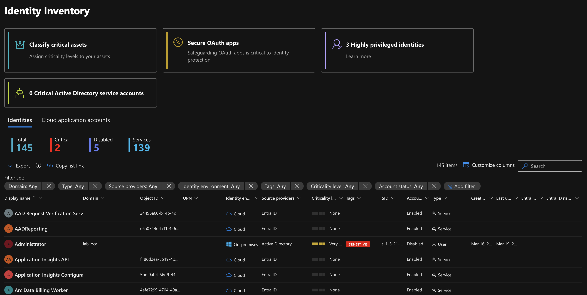
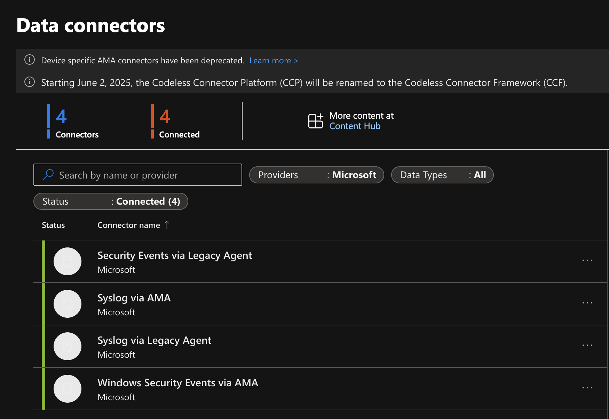
Log Flow
How telemetry travels from source to SIEM
Endpoint → Sentinel (Azure Monitor Agent)
Workstation1, DC1, and web01 ship logs to Microsoft Sentinel via Azure Monitor Agents (AMA). The agents collect Sysmon events, Windows Security logs, and Linux syslog, forwarding them into the Log Analytics workspace where Sentinel analytics rules evaluate every ingested record.
Network Tap → Security Onion (Passive Capture)
Security Onion's sensor NIC passively captures all mirrored traffic from the network tap. Because the sensor interface operates in promiscuous mode with no IP address, it is invisible to attackers on the wire. Zeek and Suricata process every packet to produce connection, protocol, and alert logs.
Network Telemetry Visualizations
Security Onion dashboards and visualizations showing network-level detection coverage across the lab
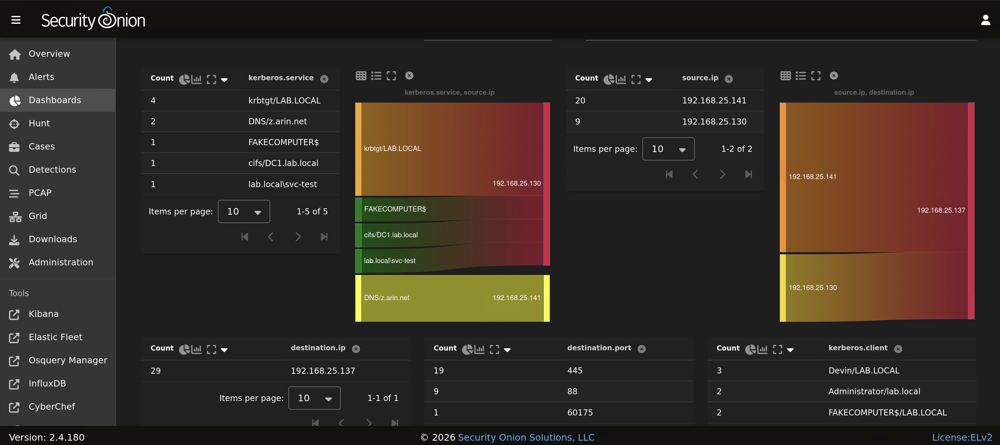
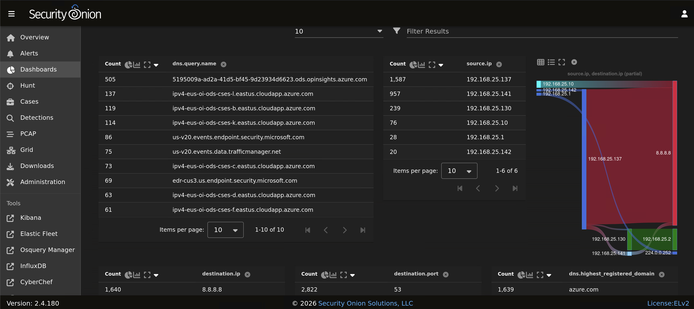
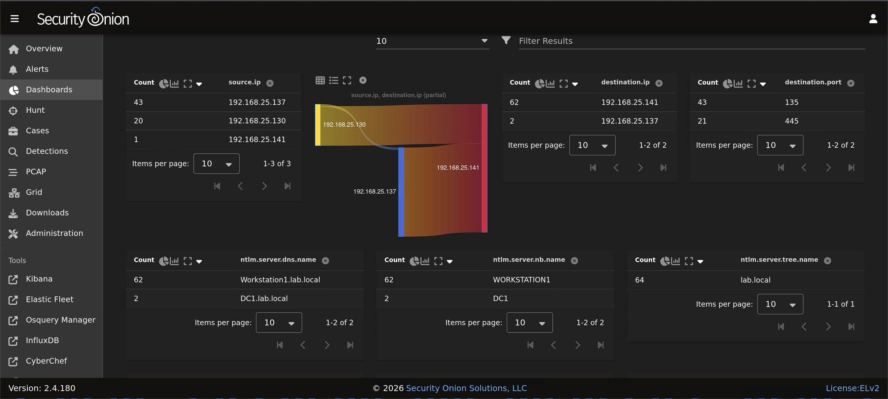
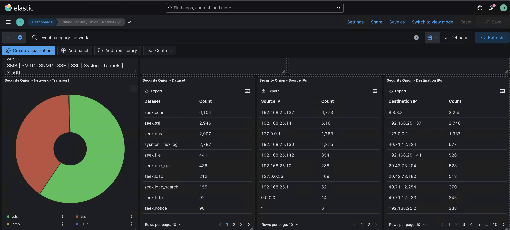
Baseline KQL Queries
Queries used to establish normal activity baselines before running attack simulations
Sysmon Process Baseline
Establishes which processes, parent-child relationships, and users are normal across the environment. Run this before any attack chain to identify what stands out later.
Event
| where Source == "Microsoft-Windows-Sysmon" and EventID == 1
| parse EventData with * '<Data Name="Image">' Image '</Data>' *
| parse EventData with * '<Data Name="ParentImage">' ParentImage '</Data>' *
| parse EventData with * '<Data Name="User">' User '</Data>' *
| summarize Count = count() by Image, ParentImage, User, Computer
| order by Count desc
| take 50Analyst Note
After running this baseline, any new process or unusual parent-child relationship introduced during an attack simulation will immediately stand out in your hunt results.
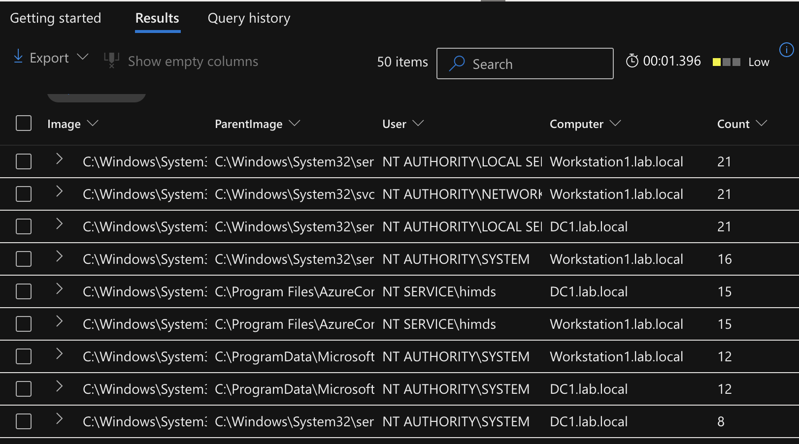
Audit Policies
Windows advanced audit policies configured via GPO to ensure full coverage
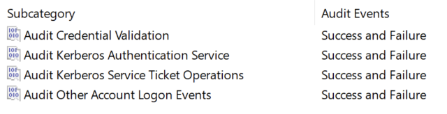
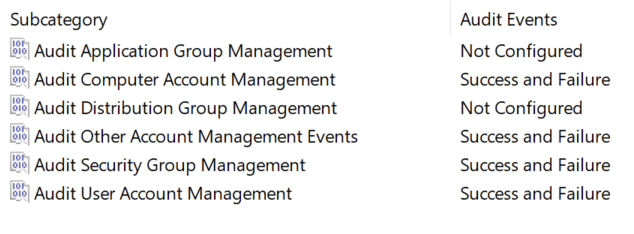
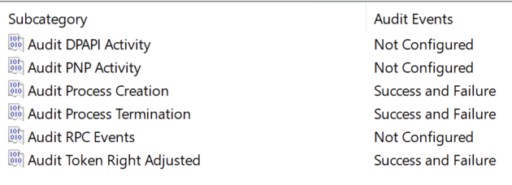
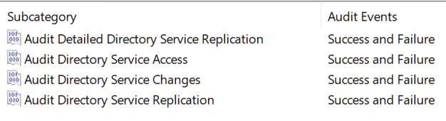
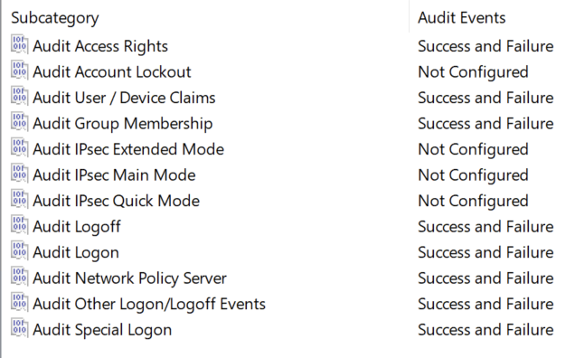
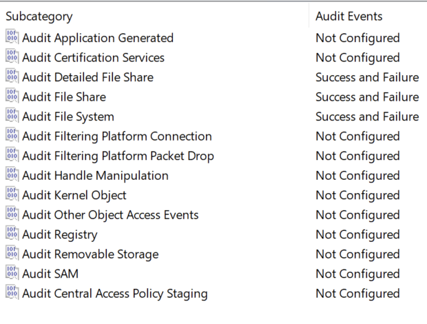